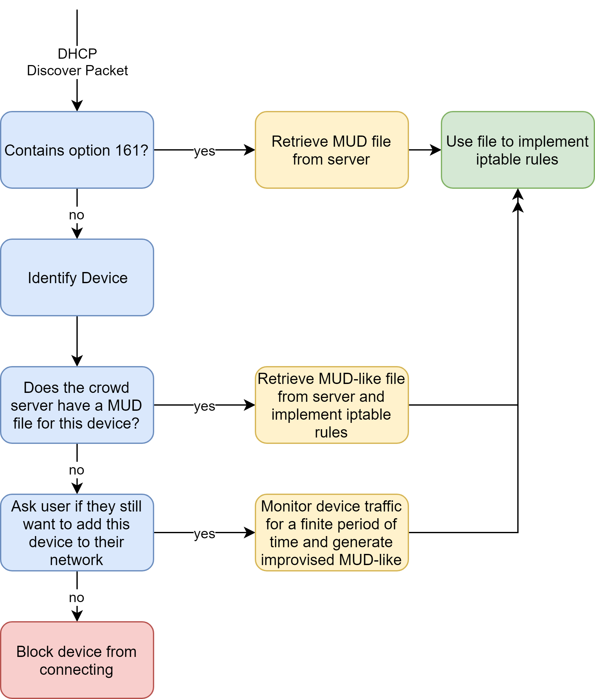

BloG
Mirai, The Trouble Securing IoT Devices, and What We Can Do About It
January 25, 2020
I'm writing this blog post after 5 months of working in Columbia's Internet Real-Time Lab on an architecture to secure IoT devices on a home network. This post is paraphrased from a full technical report I wrote. If you want, you can read it here. My router script code is not public at this time.
Summary
Due to IoT devices having limited computational power, being intended for non-technical users, and usually being cheaply made products, they are difficult to secure against cyber-attack. As the number of IoT devices in the world continues to grow, IoT botnets are becoming a larger and larger issue, threatening internet infrastructure. A potential solution to this threat is to limit IoT communications only to approved endpoints. To implement this technique, one needs the set of valid endpoints for each IoT device, as well as a program to run on every home router that will implement a firewall for each connected IoT device.
Background
In the past decade, many of the devices being connected to the internet are not personal computers but devices embedded with internet connectivity. This class of devices has generally been described as The Internet of Things (IoT) and has brought with it new security and privacy risks. While the term IoT has a potentially broad scope, I will use the term here to refer to consumer-oriented devices.
IoT devices have different security risks than general purpose devices. IoT devices generally have limited computational power, and thus lack to resources to implement security features that would be standard on general purpose devices. Furthermore, IoT devices are usually intended for non-technical users; for this reason, they are built to operate with little to no configuration from the user. This means that devices often never change the default password. Finally, many IoT devices are cheaply made products, which often results in devices being shipped with vulnerable software that won’t be patched, either because there is no way to update the software or because there isn’t sufficient economic incentive to do so. For these three reasons, IoT devices are much more vulnerable to security threats than general purpose devices. Furthermore, for these reasons, techniques that are effective for securing general purpose devices are not effective for securing IoT devices.
In addition to compromising consumer privacy and safety, IoT devices infected with malware pose a threat to internet infrastructure. There are hundreds of millions of IoT devices in the world, and the vulnerability of these devices has allowed large botnets of infected devices to emerge. For example, the Mirai Botnet, a botnet consisting of infected Linux IoT devices, had sufficient power to launch successful DDoS attacks against a DNS service provider in 2016, leaving major websites inaccessible for hours on the east coast. The number of IoT devices in the world is only growing, thus it is a pressing issue that this class of devices be secured.
While traditional techniques are not effective for securing IoT devices, IoT devices have a defining quality that we can take advantage of to make them more secure. IoT devices all have a limited set of intended uses, and therefore have a limited set of endpoints that they need to communicate with over the network. Thus, we can limit the endpoints that an IoT device is allowed to communicate with over the network without limiting the functionality of the device.
Based on this idea, the Internet Engineering Task Force (IETF) released a new internet standard in March 2019, RFC 8520, standardizing the format of a Manufacturer Usage Description (MUD) file that could be created by IoT device manufacturers for each of their products. A MUD file for a given IoT device contains a set of endpoints that the IoT device should be able to receive communication from, as well as a set of endpoints that the IoT device should be able to send communication to. This set of network communication rules can then be automatically be turned into firewall rules on the local area network. In theory, a manufacturer would host MUD files for their devices on a server, and when one of their devices connected to the internet, the device would include a URL to its MUD file in option 161 of its DHCP discover packet. The router would then download the IoT device’s MUD file and implement the communication rules as a firewall. This system, if implemented correctly, could reduce the attack surface of IoT devices by a huge margin.
Thus far, however, almost no IoT device manufacturers are generating or hosting MUD files in accordance with RFC 8520. Even if that were to change today, there would still be hundreds of millions of existing devices that do not have MUD files. This project aims to secure IoT devices both with and without MUD files by limiting their endpoints to ones necessary for device functionality.
Router Script & MCS: High Level Overview
a. Router Script
At a high level, the project has two parts. The first part is a script that runs on a home router. It is this script’s job to detect if a new IoT device has joined the network, and to limit the endpoints a new IoT device is allowed to connect to. The router script detects new devices by monitoring network traffic on the router. When the router script detects a DHCP Discover packet, it determines if the packet originated from an IoT device or a general-purpose device attempting to connect to the internet. If it is an IoT device, the script enters the function flow pictured below.
First, the script checks if the IoT device has a MUD URL in option 161 of the DHCP packet. If so, it downloads the MUD file from the manufacturer server, and converts the allowed endpoint list in the MUD file to a set of IPTables rules. By using IPTables, the router can limit the set of endpoints that a given IoT device can communicate with.
If the IoT device’s DHCP Discover packet does not have a MUD URL, then more work must be done to get a set of allowed endpoints for the device. This brings us to the second major part of the project.
b. MUD-like Crowd-Source Server (MCS)
Generating the set of all legitimate endpoints for an IoT device without access to the devices source code requires a computer networking testbed and an extended period of time to monitor the device (usually 24 hours, though sometimes more). Thus, it is possible for computer networking labs to generate MUD-like files for IoT devices even if the manufacturer has not done so. If a lab were to generate a MUD-like file for every IoT device on the market, and host them on a server, then the router script, upon identifying the connecting IoT device, could download the MUD-like file for that device, even if it didn’t have a MUD URL in its option 161. This would provide a way to secure IoT devices without a manufacturer-provided MUD.
However, this idea is naïve for a couple of reasons. First, there are thousands of models of IoT devices, each requiring its own MUD-like file. It is unrealistic to expect a single lab to invest the time and energy required to generate MUD-like files for every IoT device on the market. Second, this MUD-like server would, in theory, would be utilized every time an IoT device connected to a new network, and so it is unrealistic to expect a single university server to handle all of the traffic.
A less naïve version of this idea is to create a crowd-sourced version of this MUD-like server. Instead of asking a single lab or university to carry the entire burden of MUD-like file generation and hosting, a number of participating organizations would opt to host a node of a crowd-source server. Each node acts as a server within the distributed MUD-like server, sharing the computational burden of hosting the MUD-like files. Furthermore, each organization could contribute new MUD-like files to the collective by adding them to their node. While there are many IoT device models, there are few enough that it is feasible that a cooperative effort between a number of labs and universities could yield MUD-like files for the majority of popular IoT device models. This would allow the majority of IoT devices currently in use to be secured against cyber-attacks.
My work focused on the development and testing of the router script. If you're interested in learning more about the technical details of the program, please refer to my report.